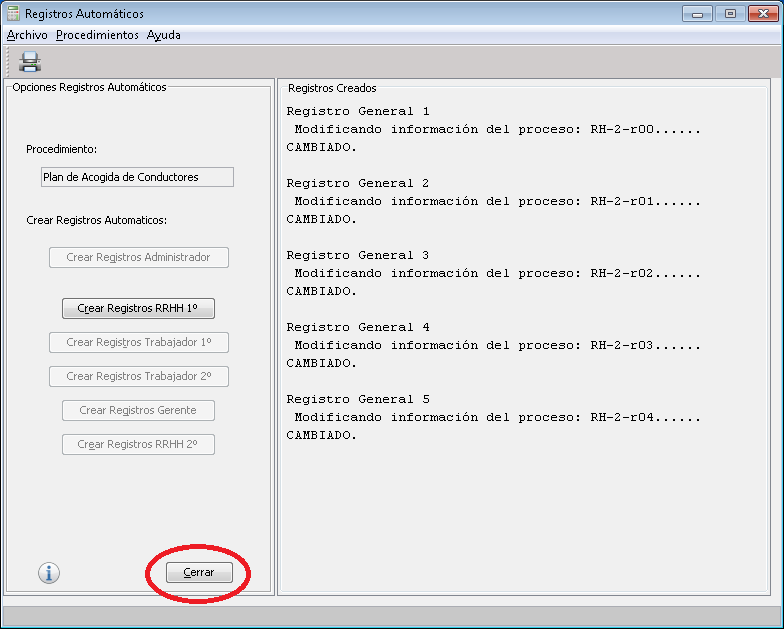

La pantalla de la Creación de Registros Automáticos está dividida en varias secciones:
En la barra de menú podrá encontrar varios menús desplegables, entre ellos el de "Archivo", "Procedimiento" y "Ayuda".
Cada uno de ellos con diferentes opciones, en el de Archivo tendrá las acciones de Imprimir y de Salir, los dos con teclas de acceso rápido, "ESC" para salir y "CTRL+P", para imprimir.
En este tendrá una única acción la de Crear Procedimiento desplegara a su vez una lista de procedimientos que tenga cargados, y dentro de ellos tendrá la opción de crear los registros automáticamente, antes descritos
"Ayuda", que es el última opción, con acceso rápido pulsando sobre "F1", se encarga de traernos hasta aquí y de darnos información sobre la aplicación y el "Acerca de" nos da información acerca de la pantalla.
Está barra contiene dos pequeños botones, para agilizar algunas acciones: la creación automática de registros anteriormente mencionada y un botón de impresión rápida, para la pantalla.
El cuerpo central, está dividido en dos secciones, en el de la izquierda será para las acciones sobre los procesos, donde se podrá:
Por último tiene el botón de "Cerrar", que al pulsar sobre él se cierra la pantalla y te devuelve a la pantalla inicial.

|
Ir a Inicio | Ir a General | |